DEMO 1.1: Exploring IoT Solutions
This demo should take about 10 minutes.
Objectives
The goal is to demonstrate an IoT solution in action (that uses Azure IoT Hub, Stream Analytics & PowerBI) and that even smartphones can be IoT devices. You’ll have the audience point their smartphone browsers to a Web page, have them send telemetry to the cloud and WOW them with live data being displayed in charts.
During this demo, there’s no need to show under the hood, understand the code or explain how the solution is built.
There are a fair number of pages/steps to get this session set up (but a lot of it is pictures), and in doing so you’ll learn plenty that can build your experience and give you credibility in all the related sessions.
Requirements
An active Azure subscription. If you don’t have an account, you can create a free trial account in just a couple of minutes. For details, see http://azure.microsoft.com/pricing/free-trial/
A free Power BI account is required to display the live data. Head to www.powerbi.com and create a free account.
Click on the Sign up free link at the top right of the screen.
Click the Sign up button in the Power BI tile.
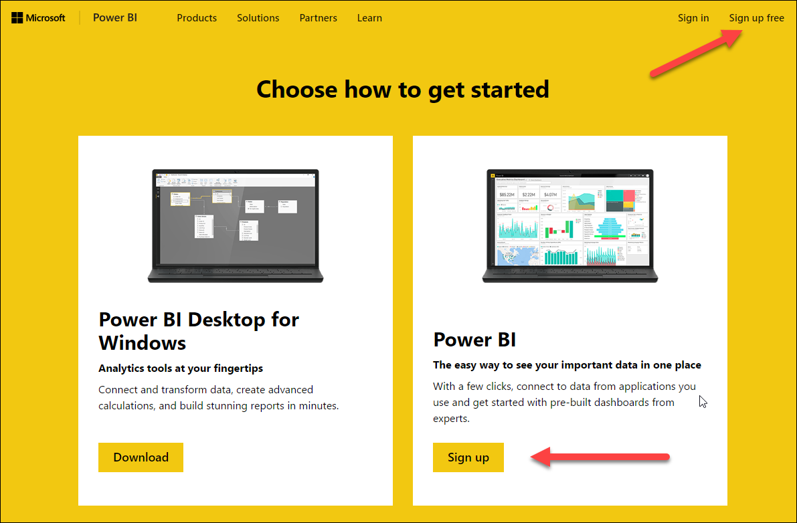
Next, enter your work email address. Note that at this moment, public email addresses like Gmail, Hotmail or Yahoo are not accepted.
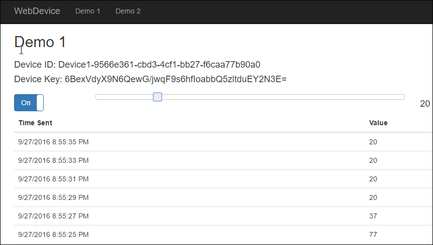
Visual Studio 2015 Community Edition is required only if you plan to manually deploy the Web application.
Setup
Make sure to create your Azure and Power BI accounts before the event.
Setting up the demo takes a few minutes so make sure to create it before the presentation. Note that the you’ll reuse the same services in demo 1.3 so don’t destroy them right after the end of this demo unless you don’t plan to show demo 1.3.
Deploy the Web App to the Cloud
Go to the Solutions folder under this session folder
Copy the folder named WebDevice
Paste it under your Documents folder
Navigate into the pasted folder
Double-click on the WebDevice.sln file, this will launch Visual Studio
In the Solution Explorer, right-click on the solution and select Restore NuGet Packages. This will download the required packages from NuGet.

Right-Click on the solution and select Build Solution. Make sure you resolve any errors before starting the deployment process.
Right-Click on the WebDevice project and select Publish

Select Microsoft Azure App Service

Select your account and subscription and click on the New… button.
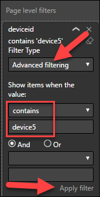
Enter a Web App Name, click on Change Type and select Web App. The name needs to be globally unique.

Enter a Resource Group name (you can use the same name you use for the Web App) and click on the New.. button to create a new App Service Plan.
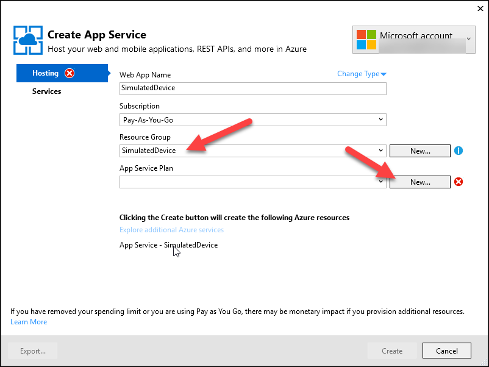
Select a data center location that is near you and the size of the plan. You can use the Free tier but B1 is highly recommended since the free tier has limited resources and is recycled at regular intervals. You can prep using the free tier, then scale to B1 right before the demo if you want.
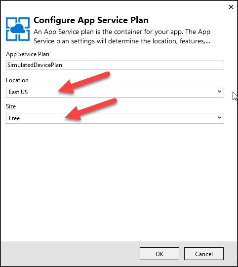
Next, click the Create button to create the App Service. This will take a few seconds.

You can now publish the demo app to Azure by clicking on the Publish button.

Visual Studio will package the Web app and deploy it. This will take a minute or two.
Once deployed, Visual Studio will display a message saying that the app was published successfully and a browser will launch.

This ends the manual deployment.
Provision Azure IoT Hub
Each attendee will point their smartphone browsers to a Web page that will simulate an IoT device by sending messages to IoT Hub. In this section, you will create an IoT Hub.
Log into the Azure portal at http://portal.azure.com
Click on the New button.

Type iot in the search box and select IoT Hub from the dropdown list.
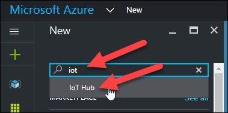
Next, select IoT Hub in the results tile.
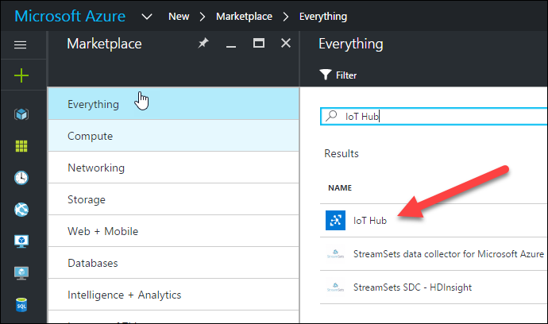
Click the Create button.
Enter a globally unique name for you IoT Hub, select a pricing tier, select your subscription and the resource group you created when you deployed the Web app. Finally, check Pin to Dashboard and click the Create button. This will take a minute or two.
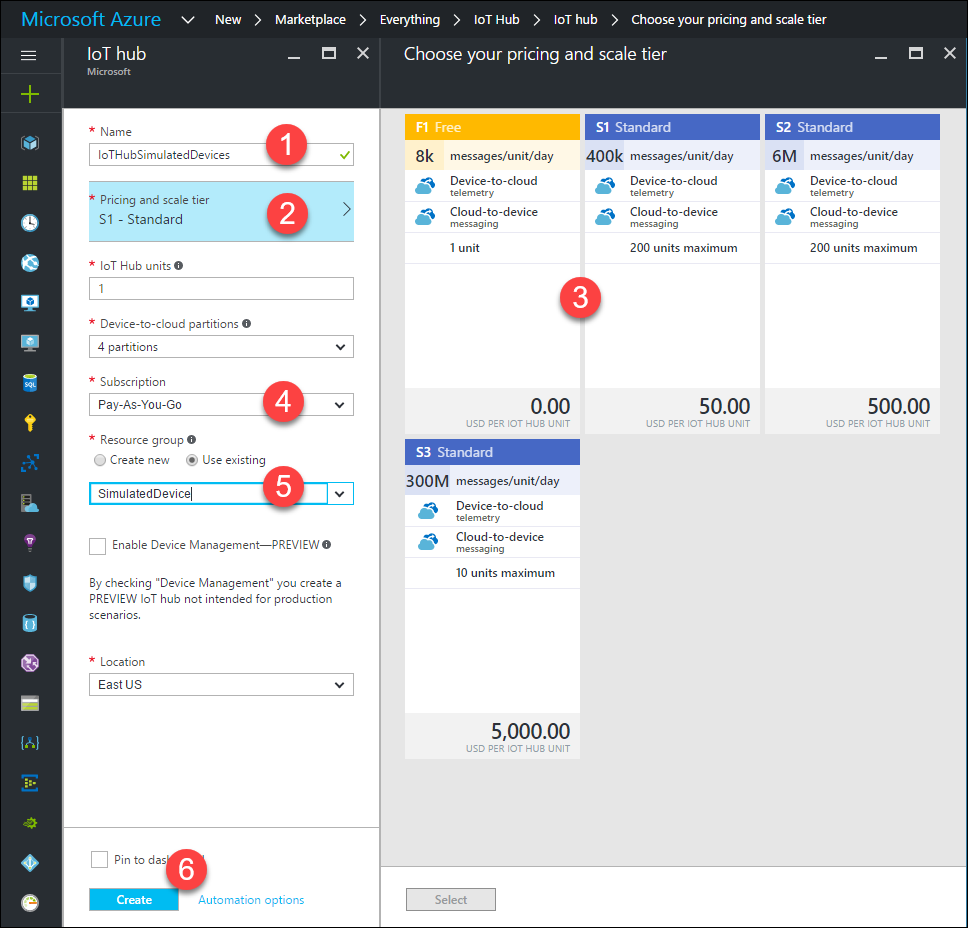
Once completed, you will be presented with the overview tile.
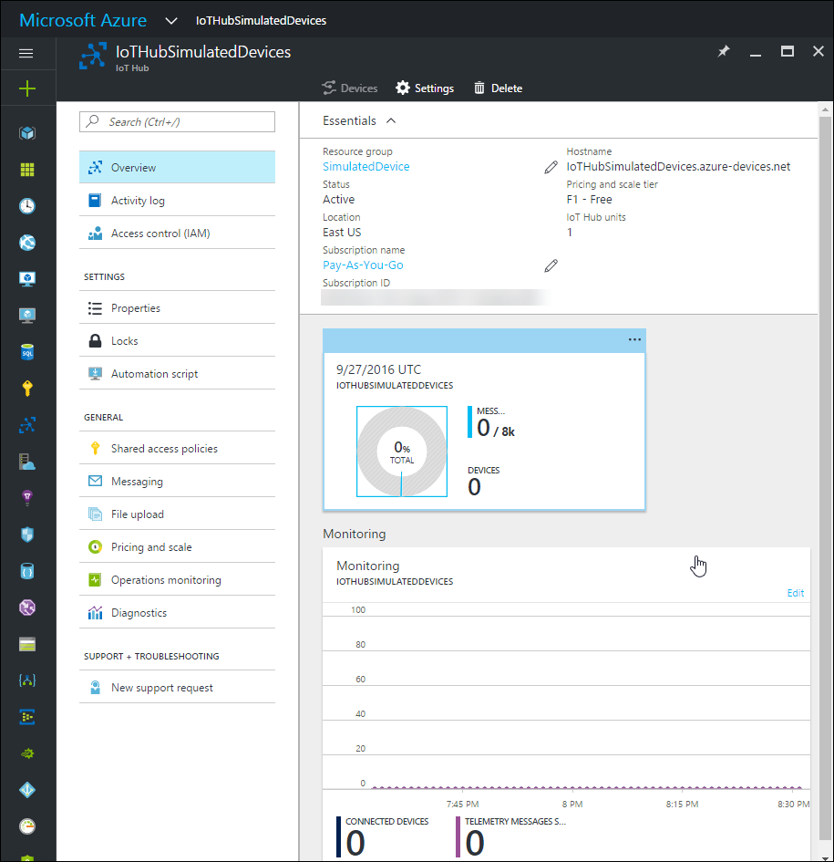
Once you have deployed the Web app and created an IoT Hub, you need to configure the Web App with the IoT Hub connection string.
Select the IoT Hub that you created in the previous steps
Click on the Shared access policies link, then iothubowner and click on the Copy button to the right of the first connection string. This will copy the connection string to the clipboard.
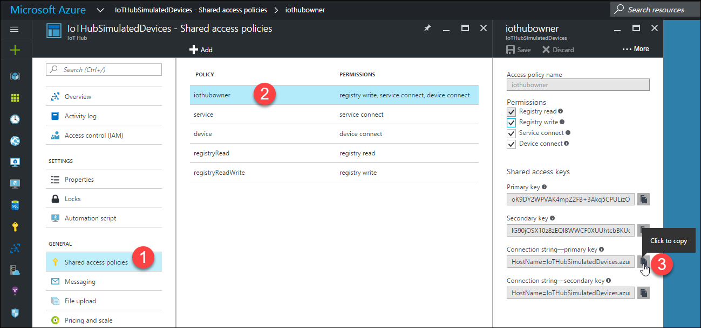
Locate the Web app by clicking on the App Services link in the left side menu and click on the service name.
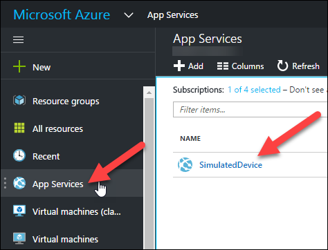
Click the Application Settings link in the Settings section.

Scroll down a little bit and locate the App settings section.

Enter these two keys:
iotHubConnectionString
iotHubUri
And their values (note that the iotHubUri value is the HostName part of the connection string). Here are some examples:
HostName=IoTHubSimulatedDevices.azure-devices.net;SharedAccessKeyName=iothubowner;SharedAccessKey=oK9DY2WPVAK4mpZ2FB+3Akq5CPULizOP/hHqNuXQiUM=
IoTHubSimulatedDevices.azure-devices.net
You should have something like this. The sections highlighted in yellow will be specific to your own configuration.
| iotHubUri | IoTHubSimulatedDevices.azure-devices.net |
Click on Save.
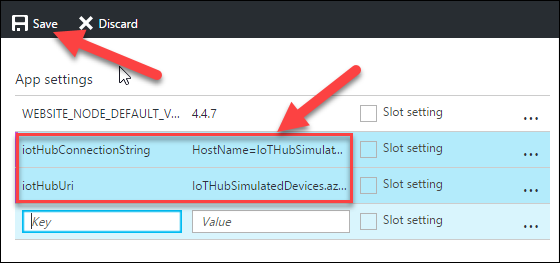
The app settings are now set.
The messages sent to IoT Hub will be read and analysed using Stream Analytics.
Click on the portal hamburger menu, then New, the type “stream analytics” and select Stream Analytics Jobs from the dropdown menu.
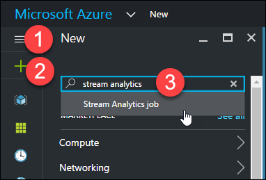
Select Stream Analytics Job from the result tile and click the Create button.
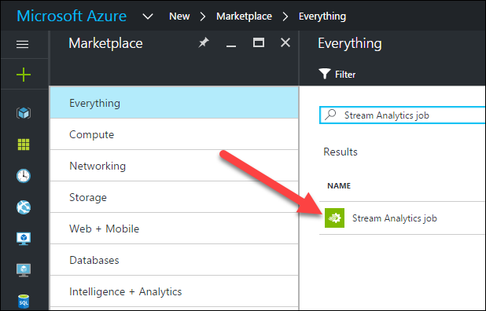
Type a job name, select your Azure subscription and select the resource group that you created earlier.
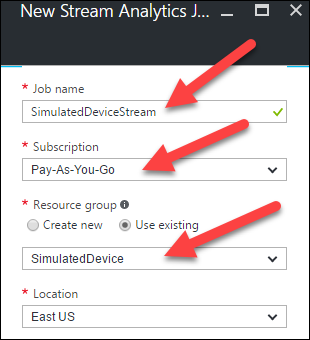
Click the Create button. This will take a few seconds.
Click on the Inputs tile.

Click Add

In the New Input tile, type an Input Alias name, select IoT Hub from the Source dropdown list and make sure the IoT Hub you created earlier is selected. Click Create.

Let’s now create an output. Click the Outputs tile.

Click Add.
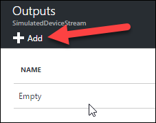
From the Sink dropdown and select Power BI. The tile will display new fields automatically depending on the selected sink.

Type a name for your output and the dataset and table names. Click Create.
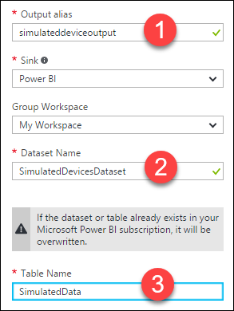
Next, click on the Query tile.
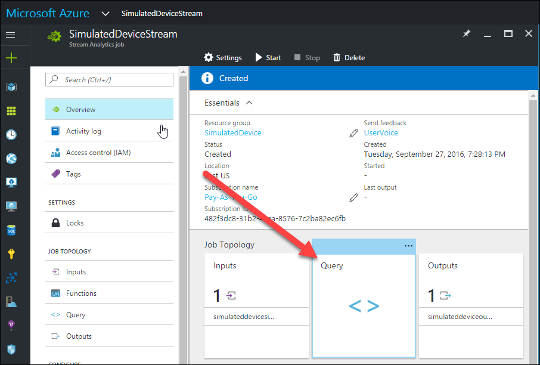
In the left section of the Query tile you’ll see the input and output you created earlier. The right section shows a skeleton query.

Type or copy/paste the following query and replace the placeholders with the names of your input and output.
You should have some similar then this:

Click on Save.

Dismiss the Query tile and click on Start to start the stream analytics job.

Select Now as the start time. This will take a few minutes.

The Stream Analytics job is now set.
Test what you’ve done so far
It’s now time to do a little test to make sure that everything you’ve configured so far does work. Remember what you have configured: a Web site that will send messages to an IoT Hub instance and a Stream Analytics job that will query the IoT Hub in real time and ultimately provide the results to Power BI.
Do you remember the URL for the Web app you deployed? No? No worries! Click on the portal hamburger menu and click on App Services.
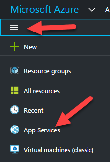
Click the name of your Web app and you’ll find the URL in the tile on the right. Click the URL.
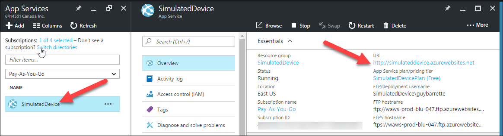
A browser will launch displaying the site’s home page. Note the URL because you’ll direct the attendees to this page.

Click on the Go to Demo 1 button.
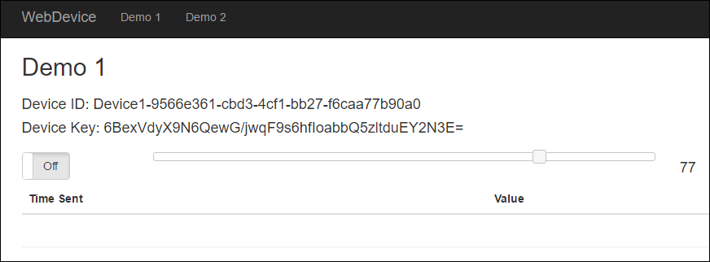
A unique device ID is created each time this page is loaded. Displayed is it’s unique name and the key unique to that device. The ID and the key are used by IoT Hub.
You’ll see a slider where you can set values from 0 to 100.
The On/Off button is used to start/stop the sending or not of the fake telemetry to the backend. A message is sent every 2 seconds.
Click on the On/Off button and move the slider. You’ll start seeing values displayed in a table, with the newest one at the top.

Let’s now confirm that IoT Hub did receive the messages we sent. Head back to your IoT Hub tile in the Azure Portal. In the Usage section, you will see that you have one device registered and the number of messages received. Click on the Devices button. This will open the Device Explorer tile and you’ll see the device that was registered by launching the Demo 1 page.
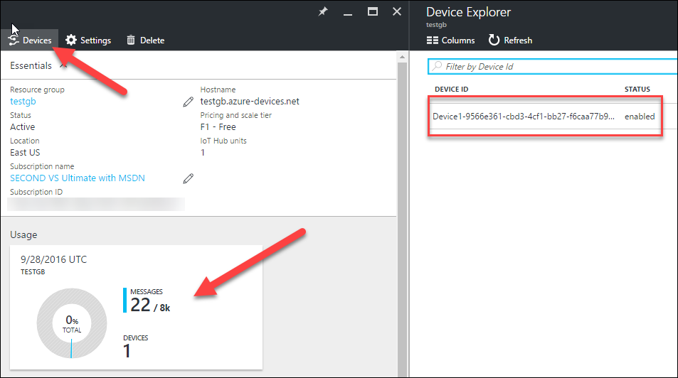
Awesome! Now let’s configure a report in Power BI.
The last step to prepare this demo is to configure a report in Power BI.
Head to www.powerbi.com
You should see a new dataset with the name you typed earlier in the Stream Analytics output configuration. Click on the dataset name.

To the right of the screen, you’ll see the table name and the fields names along with a series of visualizations or chart types. Select the Card visualization and check the deviceid checkbox.

We want to display the number of devices so let’s change the count to a distinct count by selecting Count (Distinct) in the Fields section for our deviceid field.

The count is displayed in the card.

Let’s now create a line chart to display the average telemetry for all devices over time.
Click on the Line visualization, select the avgtelemetry and outtime fields. Make sure that outtime is in the Axis section (you can drag&drop it if needed) and that avgtelemetry is in the Values section. Select Average from the dropdown menu to average the avgtelemetry field.

You should have something like this:
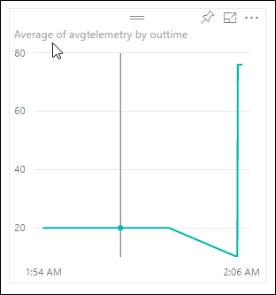
Let’s display these two reports in a new dashboard.
Click the pin button on each graph.

Power BI will prompt you for a report name.
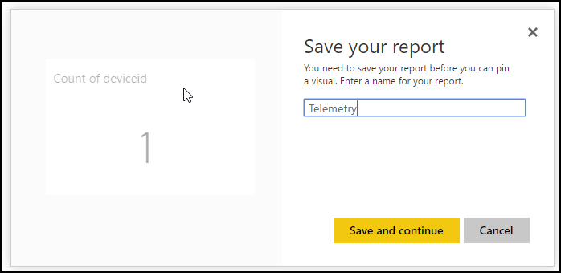
Next, Power BI will ask you if you want to pin the report in a new or existing dashboard. Select New and enter a name.
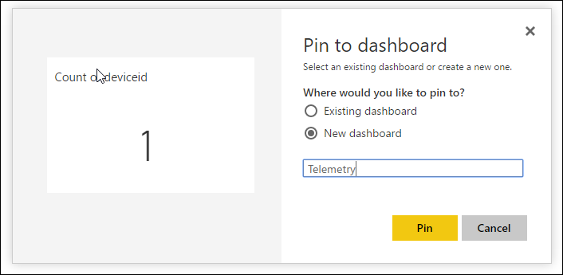
Notice that the new dashboard appears in the Dashboard section. Select it.
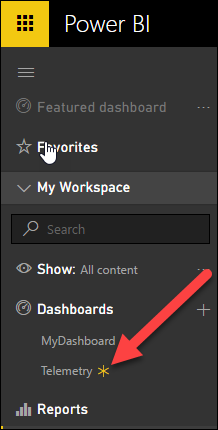
Congratulations! You just built your first Power BI dashboard and are ready to perform the demos per the instructions found for each demo.
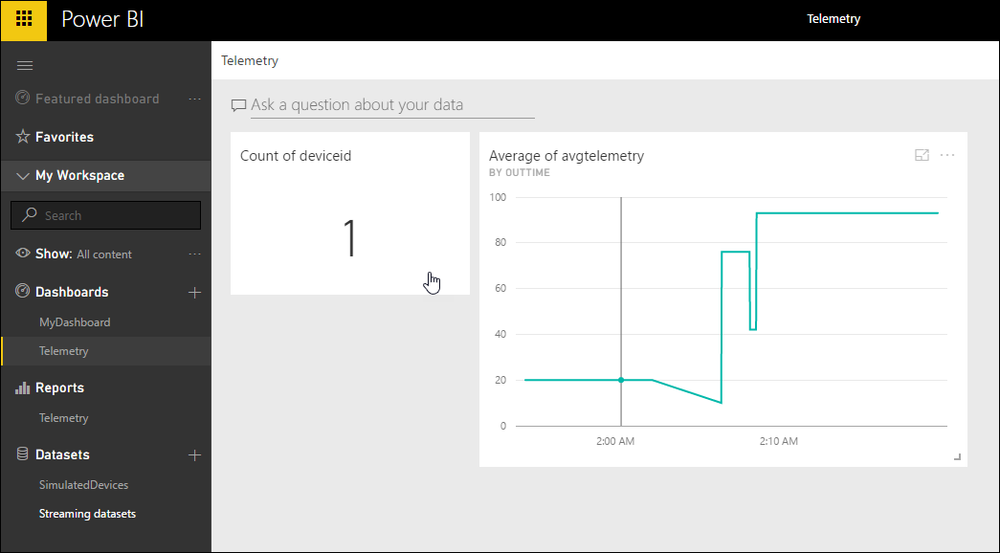
Demo Steps
Explain to the attendees that they’ll use their smartphone as simulated devices that will send some fake telemetry to a cloud backend and the data will be displayed in charts live.
Before beginning your presentation:
Point your browser to the Azure portal: http://portal.azure.com
Log in
In a new tab, point to http://www.powerbi.com
Login
In a new tab, display the demo Web App
Let’s start the demo:
Show demo Web app.
Give the URL to the attendees.
Ask them to click on the Go to Demo 1 button.
Explain that the page will send to the cloud backend the number that they will select using the slider, and that, every two seconds.
Ask them to click on the toggle button and move the slider from time to time.
Show the Power BI dashboard and explain that the data is displayed in almost real time.
Show the IoT Hub in the Azure Portal.
Explain that the messages are sent to an IoT messaging service called Azure IoT Hub that can process thousands of messages per second.
Show the Stream Analytics job.
Show the query.
Explain that the query runs every 2 seconds and average the values sent by each device.
Explain that the query outputs the results to Power BI directly.
Create a new graph. Click on the SimulatedDevice Dataset.
Select the line graph, drag the outtime field as the Axis, drag the avgtelemetry field as the Value and select Average from it’s dropdown menu.
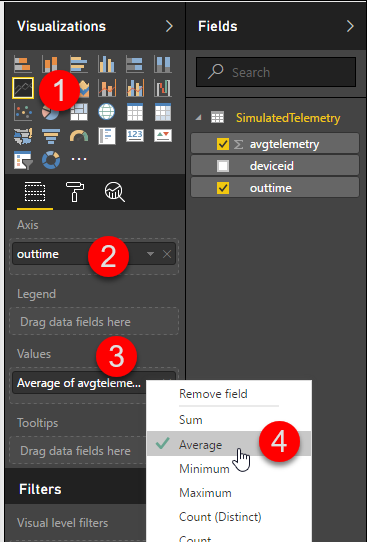
Drag the deviceid field as the Page level filter and select one of the device.
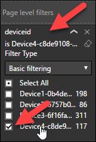
If the device you’re looking for is not listed, select Advanced filtering, contains and the device name. Click Apply filter.

Save and pin the report to the dashboard.
Ask the attendee you have this device to change the value from time to time.

This concludes the demo.
Teardown
You’ll be reusing the same services in demo 1.3 so don’t delete them yet. See Teardown in 1.3 you have finished the session. Be sure to do this to avoid excess resource charges.